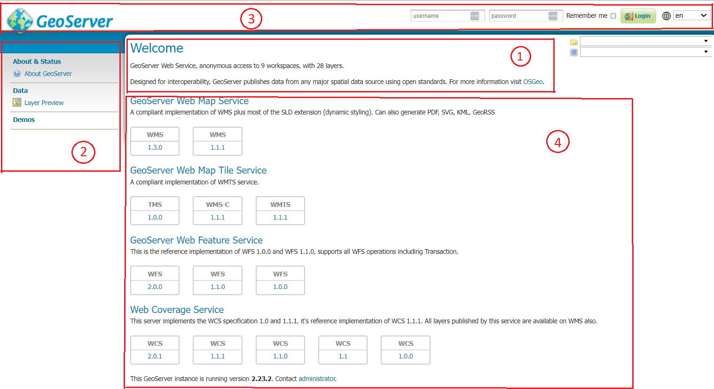
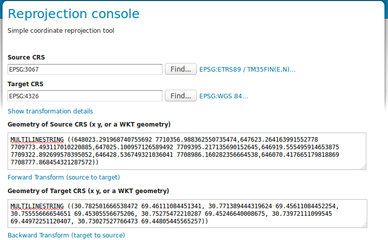
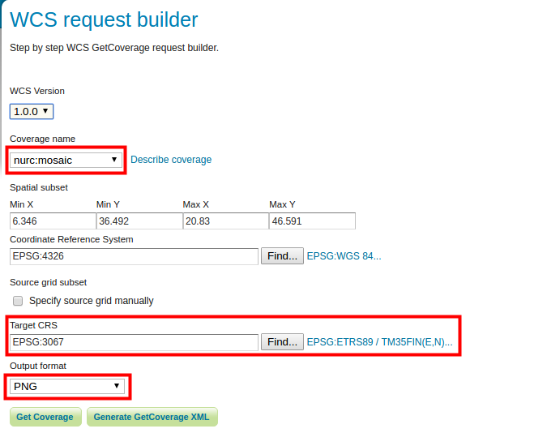

EXERCISE 1.1: INSTALLATION AND COMMISSIONING
Content of the exercise
The existing GeoServer server is accessed via a web browser. We learn how to edit the server’s general information and how to set the administrator’s user profile information (ID and password).
The aim of the exercise
After the exercise, the student will be able to log into GeoServer as an administrator and have a general knowledge of its user interface.
Estimated duration
40 minutes.
Preparation
Start a web browser on your computer and log in at:
If you are using a remote server, ask your teacher for your ip address and port. Then edit the network address according to the instructions in the localhost:8080 section.
In front of you is the GeoServer interface. Before you log in, you will see some general information about the server.

In the middle (1) is general information about the server and its owner/operator (these will be updated soon). In the middle is the version number of the installed GeoServer, which is 2.23.2 in the picture. This is the start page of the GeoServer server and can always be accessed by pressing the GeoServer-logo from the top left.
By default, the centre displays details of the options in the sidebar on the left (hereafter “main menu” (2)).
The Main menu (2) is used to manage and view the server’s functions.
The Top bar (3) contains login information and the GeoServer logo, which always takes you to the home page.
The sidebar (4) on the right side shows the map services and their versions supported by the server in the home screen.
SRS List ja Reprojection console
The SRS List function lists the coordinate systems supported by GeoServer. GeoServer contains most of the coordinate system used, the CRSs (Coordinate Reference System). SRS (Spatial Reference System) is a synonym for CRS.
You can experiment with tarnsformations and conversions between coordinate systems using the Reprojection Console.
The coordinates are presented in WKT format (Well Known Text).
The following figure shows the point geometry defined in WKT format in the EPSG:3067 coordinate system POINT (522800 7615630):

You can also try ETRS89/TM35FIN line geometry. You can find the example file in the training folder as esimerkki_wkt_geometry_3067.txt. Open it in a text editor and use it in the Reprojection console tool. Try converting it to, for example, WGS 84.

WCS request builder
This feature allows you to test the functionality of the Web Coverage Service.
Download nurc:mosaic data as PNG file in the Finnish national coordinate system (ETRS89/TM35FIN (EPSG 3067)). Leave the other settings as default:

Press Get Coverage at the end.